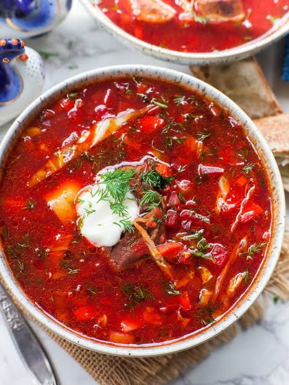

A little piece about me!
My name is Roman. I was born in Odessa, Ukraine. I came to the U.S.A. because of the war in my home country. I don't have any siblings. I enjoyed watching some Soviet Union cartoons, like "Ну, Погоди!" and some famous TV shows like "Сваты", "Дизель-шоу", when I was young.
I know three languages: Ukrainian, Russian, and English. I'm also learning Spanish right now. I will take Spanish 2 next semester. The Ukrainian native dish it's borscht, which I very like.
Career Aspirations
I like programming and playing video games. In the future I think I want to develop my own video games. Maybe I will work in cybersecurity instead.
Favorite Foods:
- Burger
- Sushi
- Pelmeni

Hobbies:
- Running
- Chess
- Reading